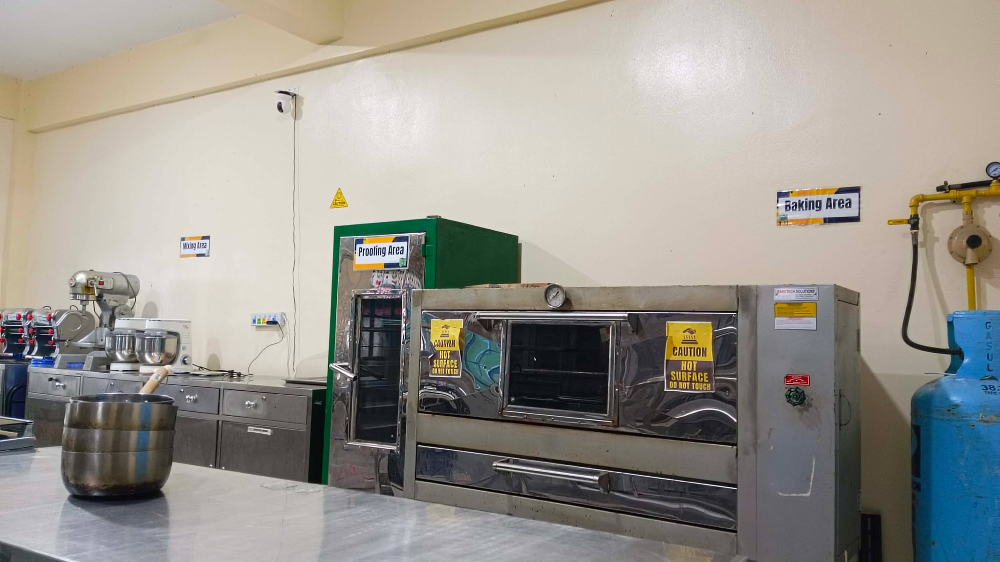
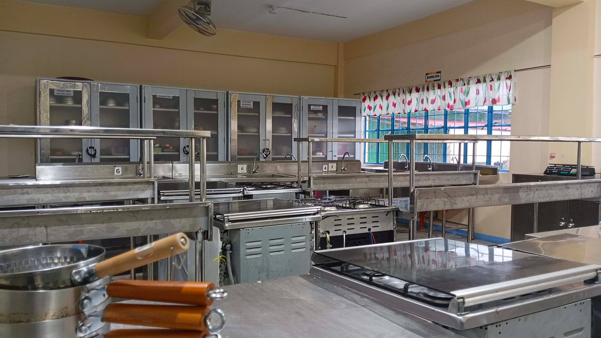
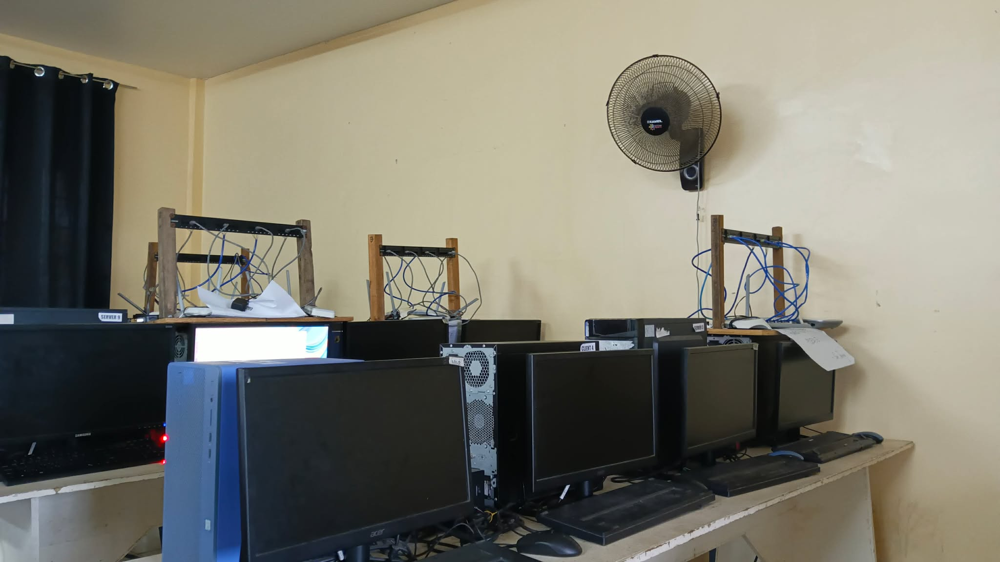
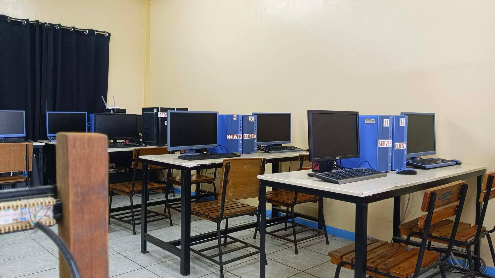
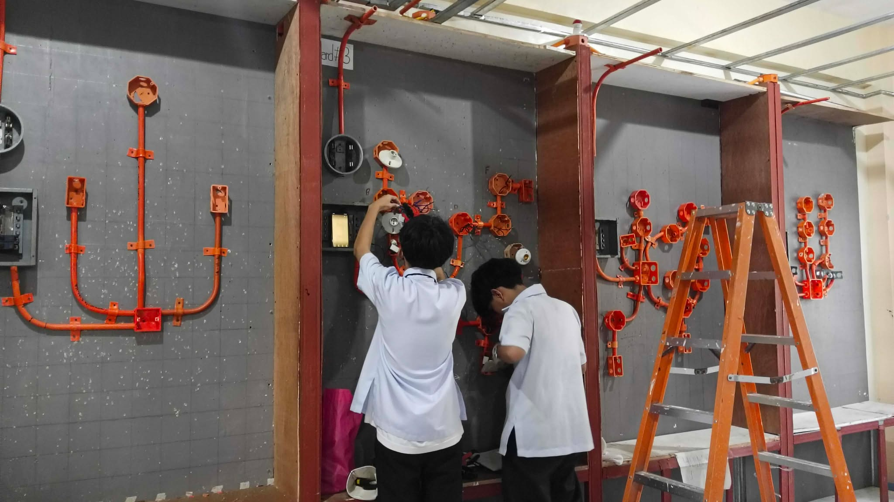

TVL PATHWAY
Technical-Vocational-Livelihood (TVL) is a track in senior high schoolthat focuses on equipping
students with practical, hands-on skills that are useful for employment and livelihood. TVL emphasizes
real-world training that allows students to learn by doing. This track is ideal for learners who want
to be job-ready after high school or who are interested in starting their own small businesses.
TVL helps students develop technical skills, work discipline, and problem-solving abilities that are
important in various industries.
The TVL track offers different strands, including Home Economics, Information and Communications Technology,
and Industrial Arts. Each strand focuses on specific skill sets, such as cooking, baking, computer programming,
electrical installation, or welding. These strands are designed to match industry needs, ensuring that students
gain relevant and in-demand skills. Training often includes workshops, laboratory activities, and hands-on
projects to strengthen practical knowledge.
One of the main advantages of the TVL track is the opportunity for students to earn certifications,
such as TESDA National Certificates. These certifications serve as proof of competency and can help
graduates qualify for jobs both locally and internationally. TVL also prepares students for entrepreneurship
by teaching basic business skills, workplace ethics, and safety standards. Overall, the
Technical-Vocational-Livelihood track empowers students with practical abilities, confidence, and opportunities,
allowing them to build a stable career path or continue further education and training in their chosen field.
Top of Form
HOME ECONOMICS (HE) STRAND
The Home Economics (HE) strand equips students with practical skillsin cooking, baking, hospitality, and service-related
work. It is perfect for students who enjoy working with food, keeping things organized, and providing good service
to others. Through this strand, learners gain a better understanding of how to prepare food properly, keep work
areas clean, and deliver services that meet professional standards.
Students get plenty of hands-on experience in areas like cookery, bread and pastry making, food and beverage
service, and housekeeping. They learn how to prepare meals correctly, use kitchen tools safely, follow proper
hygiene, and present food in an attractive and professional way. These skills are very useful in places like
restaurants, hotels, and other service-based businesses, helping students become more confident and ready for
real work.
Skills You Will Learn
- Food preparation & cooking
- Baking & pastry making
- Food & beverage service
- Housekeeping & sanitation
- Kitchen hygiene & safety
- Customer service & communication
- Basic business & catering skills
Possible College Courses
- Hospitality Management
- Culinary Arts
- Tourism Management
- Nursing or Caregiving
Career Opportunities
- Chef or Cook
- Baker
- Hotel or Restaurant Staff
- Caregiver
- Entrepreneur (baking, catering, food business)


COMPUTER SYSTEM SERVICING (CSS) STRAND
The Computer Systems Servicing ( CSS ) This strand is perfect for students who are interested in computers,
technology, and IT-related work. This strand teaches students how to install, maintain, repair, and
troubleshoot computer systems and networks, skills that are very important in today’s digital world.
Students get hands-on experience in assembling computer units, installing software, setting up networks,
and solving common hardware and software problems. They also learn how to handle computer equipment safely
and provide basic technical support. These skills prepare students to help people and businesses keep their
computer systems running smoothly, making them ready for a variety of technology-related jobs.
Skills You Will Learn
- Installing and repairing computer hardware
- Setting up and maintaining networks
- Installing software and operating systems
- Troubleshooting computer problems
- Basic technical support
- Proper handling of computer equipment
- Data and file management
Possible College Courses
- Information Technology (IT)
- Computer Science
- Animation and Multimedia
- Software Engineering
Career Opportunities
- Web Developer
- Programmer
- Graphic Designe
- IT Support Specialist
- App Developer


ELECTRICAL INSTALLATION AND MAINTENANCE (EIM) STRAND
The Electrical Installation and Maintenance (EIM) strand is perfect for students who are interested in
working with electricity, wiring, and electrical systems. This strand teaches students how to install,
maintain, and repair electrical systems in homes, buildings, and other facilities. Students get hands-on
training in electrical wiring, lighting installation, equipment maintenance, and safety practices. They
also learn how to read electrical plans, use tools correctly, and follow safety standards to prevent
accidents. These skills help ensure that electrical systems work efficiently and safely, preparing students
for careers in various industries where technical electrical knowledge is needed.
Skills You Will Learn
- Electrical wiring and installation
- Maintenance of electrical systems
- Repairing electrical equipment
- Reading electrical plans and diagrams
- Using electrical tools and testing devices
- Following electrical safety standards
- Basic troubleshooting
Possible College Courses
- Electrical Engineering
- Mechanical Engineering
- Industrial Technology
- Automotive Technology
Career Opportunities
- Electrician
- Welder
- Carpenter
- Automotive Technician
- Machine Operator


 HOME
HOME